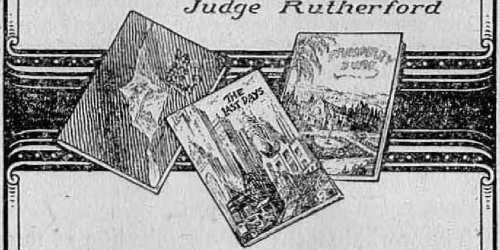

Internationally-known, author and radio lecturer
''The Harp of God Deliverance
His other books /Creation .
\ Reconciliation
(Government
\and many others have a combined circulation exceeded only by the Bible
Maile in U. S. A.
Copyrighted 1929 and published by the International Bible Students Association
Brooklyn, New York, U. S. A, .
Loudon, Toronto, Melbourne, Cape Town, Uerne, Mugdeburg.
PUBLISHER’S FOREWORD
IT GIVES us great pleasure to present this treatise from the pen of Judge Rutherford. Like every one else who takes note of things going on in the world, he recognizes the oppression of the multitudes of people of every land. His interest in humanity inspired him to search for the cause and also, if such a thing could be found, the remedy; and here in this booklet is set forth not only what he found to be the cause of the distress, but also the only possible solution to the problem.
We commend this booklet to you in happy anticipation of your pleasure and profit.
THE PUBLISHERS?
THE 5:15 p.m. train was beginning to move out of the station as Jacob Gershom swung aboard, lie was a commuter and rode that train six days in the week. As usual, he arrived at his modest home shortly before 7:00 p.m. To the joyful greeting by his wife he only gave a grunt and a sigh. A wholesome supper of plain food awaited him. He ate in silence, little thinking of what he was eating or how. His wife was concerned about him, and at the conclusion of the supper inquired about his distress of mind.
“Elizabeth, this earth is a beautiful place,” he replied, “and yet the world is cold, cruel, and oppressive. The train, as you know, traverses some pleasing country on the way up from the city. At this season of the year the foliage is so amazingly beautiful, and the hills and valleys so quiet and peaceful, that one is drawn to them. I am immediately reminded, however, of the condition of the people about us, including ourselves. I feel like an exile from the things that would make one glad. You know, my name 'Gershom’ means exile. I wonder if that has anything to do with my feelings.”
“But, Jacob, what is there in a name? If you would insist that there is something, then you must remember that my name is Elizabeth. You
' 3
have always liked that name, and it means 'consecrated to God’. Yon should trust Him and know that all things will be right in due time.”
‘‘That is mighty nice of you, Elizabeth, to put it that way. But how many people are like you? On the journey up this evening I spent the time reading a condensed statement of some of the conditions that the people have to contend with. Some man has collected these facts from the papers or elsewhere and put them in form and published them, and a copy fell into my hands. The sum total of these statements is this:
“There are a few that roll in material wealth and continue to increase their holdings. These are even cruel and wicked and great oppressors of others, and yet they are of the ones that seem to be proud and happy. There are millions of people like us striving .to make an honest living, pay for the little home, and lay aside something for a rainy day, but like us they do not seem able to succeed in making much progress. I had a little run-in today with the head man of our company. He was unreasonable and cruel, and I presume that is the reason why my mind turns specially to these things tonight. You know that my salary is not what it should be for a man of my attainments and ability. But what am I to do? When we were married I had a little business of my own, but ‘the big fish’ soon swallowed me up and I was compelled to go to work for a salary or let us both starve. Our home is not yet paid for. Regularly and promptly every three months the interest must be paid on the mortgage, and the taxes continue to increase and must be paid. In fact, our taxes now amount to more than we had to pay for rent before the war.
“The cost of food continues to increase; our clothing, which is very modest, is more expensive than it used to be, and the material is not so good; the electric light, the gas, and the telephone bills are higher than they formerly were, and the railroad rates still continue high since the war.
“We are compelled to live more economically than we did ten years ago. I know that the big corporations are making much more money than they did a few years ago; I know that the company for which I am working is rich and daily growing richer, and that my services are more valuable to that company than when I began to work there.
“The head of our company is fully acquainted with all these conditions. I went to him today and asked him for a small raise in my salary, and, do you believe it? he would not even be reasonable enough to listen to me. He ordered me out of his office in an angry manner and said: ‘If you are not satisfied with what you are getting here, you can go somewhere else.’ Well he knows that I must meet my obligations, that I can not afford to quit and hunt another job, because jobs are not easy to find. I am just one of the many millions who are being oppressed and who are compelled to suffer because of the harshness of the few. I wonder if this cruel oppression of human beings will ever end.
“On the way to the train some one handed me this magazine. I see that our condition is not even as deplorable as some others. Misery loves company, so I read this with considerable interest on the way home today. More than ever I am impressed with the conclusion that the men who rule the world are cold, heartless, cruel and oppressive. Shall I read some of these things that appear here? Thank you, I will do so?'
The Farmers
The farmers are the men that produce what the people need to sustain life. If there were no farmers or truck gardeners the people would starve. During the past eight years the public press has repeatedly called the attention of its readers to the great commercial prosperity throughout the land. In that same eight years the farmers have made no profit. On the contrary, many of them have gone into bankruptcy. Such, has not been due to their lack of endeavor or the failure of their crops.
The chief reason for their unhappy condition is that the men who produce the food have been cheated out of their just earnings by men who produce not one thing. So desperate have the farmers grown that the issue in the recent political campaign for president was: “What shall be done for the farmer ?" In different parts of the country the farmers grow different kinds of crops. The net result to the farmer seems to be about the same. They are very much discouraged.
Practically everybody eats potatoes, and therefore there is a great market for potatoes. The farmer grows the potatoes at the cost of money and great effort and yet gets little for them. Often the farmer, after paying for the cost of production, has nothing for himself and family to live on and to pay the interest on the mortgage on his farm. The people who eat potatoes must pay a high price for them, and there are millions of people who would he glad to eat more potatoes if they could get them at a more reasonable price and in keeping with their daily wages. The potatoes for the large cities in the East are grown along the Atlantic seaboard, from Florida to Maine. This is probably the richest potato-growing country on earth. Practically every one of the farms is mortgaged for as much as the land is worth. All are agreed that the farmers are in a desperate condition. The following is a sample of some of them and their condition:
Ed. Kellam, of Painter, Virginia, has a seventy-five-acre farm. In 1924 it was clear of debt. Today, in 1928, he does not own a foot of it, and in the meantime he has farmed it every year. The interest and taxes and the loss of his crops have consumed his farm.
K. C. Doughty, Produceville, Virginia, has a 150-acre farm with a beautiful home. Three years ago the farm was all his own. Today it would not pay even the mortgage. He ‘is practically homeless.
One of the tenants of K. D. Vail makes this statement: “I came here three years ago with several hundred dollars in money and went into the potato-growing business with my brother. This year my brother and I produced and marketed three thousand barrels of potatoes. My money is now all gone and I have not enough left of it to buy myself a pair of shoes."
In the last three years an estate in Virginia worth several hundred thousand dollars has dwindled in value until it is almost of no value to the owners. The estate was ent up into small farms and rented to potato growers. The growers were too poor to finance their own needs for farming, and as they received practically no returns for their products, they have had no money with which to pay the rent or for the machinery and money advanced to do the farming. .
Here is a sample condition of the many potato growers: One man makes a cash investment of $4277.09 to plant, cultivate, and produce his potato crop. He produces 1350 barrels of potatoes. He takes his potatoes to market and sells them and realizes only $1687.50; so there is a net loss of $2589.59, to say nothing about the necessities for himself and family during the year.
R. B. Johnson, of Concord Wharf, had seventy-live acres in potatoes, and his loss was $3000, besides all his labor. He received about ninety cents a barrel for his crop.
It used to be that potatoes were marketed without regard to size. The buyers took them as they came. But now the chain stores control most of the foodstuff of the country. They do not want small potatoes, nor do they want large ones. They want an average size and insist on culling out all the others. The farmer must bear the cost of the sorting and then take what- he can get for those that are not desired.
In 1928 there was an unusually large crop of potatoes grown in the country from North Carolina to Maine. The dealers smashed the prices, and the farmer lost.
Ten years ago a man took his potato crop to the market and whether he had a thousand barrels or a few barrels he got the market price and received cash for it. In recent years it has become different. Now a farmer has absolutely no control of his market. He brings his product to the station, and the local commission merchant receives it on consignment, not promising him that he will get a cent for it. The prices are fixed in the following manner: The dealers in the big cities ascertain from the local dealers what is on hand, and wait until the shipping stations are jammed full; then the price is forced down and the big dealers buy for about what they want. The market may be glutted today and potatoes be worth $1.50 a barrel, and tomorrow they may be worth $3.00. But the price always goes up after the farmer has parted with his potatoes.
The farmers see a few men rising to affluence in a few years while at the same time the farmer is becoming poor. They know that the commission man never runs any risks or takes any chances. If anybody loses, the farmer must suffer the loss.
When the farmer ships his potatoes the commission man will say to him that it is impossible to name a price because the product is perishable. But the farmer notices that as soon as the commission man gets the potatoes in his possession there is no difficulty about fixing the price.
The farmer can not go from door to door to market his potatoes with the people who want to eat. That part of it is a business in itself. Therefore the men who produce nothing see that the towns and cities make laws that forbid peddling.
Another sample: Mr. Johnson takes his potatoes to the man who buys for the chain stores or big wholesalers. He is told that he can not expect to get more than $2.15 a barrel. He sells for that, and within a few minutes thereafter the same potatoes are sold for $3.25 a barrel.
The chain stores now operated by big corporations have much to do with the prices throughout the country. Today there are 1300 chain stores in America. They buy in great quantities when the market is glutted, distribute among their stores and sell at a high price to the consumer. The man who produces and the man who eats must suffer, the one because he has to pay a high price, and the other because he must sell at a loss; and the man who produces nothing makes the profit.
It is not unusual for a farmer to ship his produce on consignment, pay the transportation charges, later find out that his product is represented to him as being worthless, and then get nothing. Even though his potatoes have left the shipping station in good condition, he is often told that when they arrived at the destination they were practically worthless. The following is a sample of how farm products are often handled by the commission man:
A man was engaged in growing peaches in Alabama. He produced fine peaches. He shipped a carload to a commission house in Indianapolis. This was his first experience with the commission house. He received a telegraph message that his fruit had arrived in such damaged condition that it was hardly worth handling. He took the first train to Indianapolis, and, without revealing his identity, called on the head of the commission house and represented himself as one who wished to buy peaches. The commission merchant said, "Yes, we now have in the yard the finest carload of peaches that ever came to Indiana.” The grower asked to see them. The commission man took him out into the railroad yards and pointed with pride to this car of extraordinarily fine peaches, saying, "Nothing as fine as this ever before came into this city.” The grower took his revolver out of his pocket, stuckit in the'comniission merchant's ribs, and demanded immediate settlement for the full price and got it. Not every man, however, wishes to undertake this hazardous way of collecting Iris money.
The farmers are often told that the reason the price is so low is that there is a great overproduction. At the same time there are millions of people who would like to eat but can not eat because they have not the money to pay the high price that Is charged for food. There could be no, such thing as an honest overproduction in a country where there are millions of people out of employment and on the verge of starvation because they can not buy food.
Prohibition
And just here there is an interesting matter, for consideration with reference to prohibition. In recent years chemists have discovered that the farmers could make great quantities of alcohol from their so-called overproduction of potatoes. They could also make it from the great quantity of corn-stalks that go to waste and from many other things about the farm. They are not permitted to do this, however. If a farmer should use his products to make alcohol, what would he do with it? He could use it to operate his tractors, his automobile, and his engines to prnnp water about the farm at an exceedingly low price, instead of using gasoline. The Standard Oil Company and other big oil companies produce gasoline for sale and they sell it at a high price. It is a well-known fact that the big oil,companies are specially interested in having the prohibition law kept on the statute books and strictly enforced, because if the farmers wore permitted to make their own fuel alcohol for operating their engines the oil stocks would greatly depreciate.
In the recent campaign the big oil operators, who manufacture and sell gasoline, and the preachers worked hand in hand to keep the prohibition law in force, and they threaten to enforce it more rigidly henceforth. Of course everybody understands that the big oil companies, like the Standard Oil, are “great moral and charitable” organizations. Some of the big men in them are the chief advocates of Sunday school and church organization throughout the land. Many of the law makers know that this statement is absolutely true, and yet Big Business prevents the farmer from using his own product for his own benefit to operate his machines; and while it is doing this the preachers, as the great moralists, furnish the smokescreen behind which Big Business works. If the farmer could use his surplus crop of potatoes, corn-stalks and other products to produce fuel for his farm machinery, his automobile, etc., he could greatly reduce the cost of operating his farm; but in that event the poor oil companies would suffer and the preachers would have nothing to rant about.
Here is a statement from a man who travels about amongst the farmers: “During the past few days I have talked with a number of farmers. I found that a lot of them will not dig their potatoes because they can not get the cost of digging, sorting and marketing out of the price at which they are forced to sell/’
Great fields of potatoes in Kansas and the Dakotas and along the eastern seaboard have been left in the ground undug because the fanner could not afford to pay the cost of digging and taking them to market. If permitted, however, to produce the fuel for his engines from them he could manage to save a little money. Probably he would be able to haul in trucks at least part of them to the towns and sell them to the poor and give them a chance to eat. Of course the big corporations will permit their “moral duty” to compel them to make and enforce such laws as they say are for the good of humanity, but from which only the rich profit.
Another man writes in one of the leading farm journals: “Many cars arc being loaded with potatoes and shipped at a price as low as twenty-five cents a bushel, and none at more than thirty cents a bushel. That is the price paid the producer.”
There are two and a half bushels in a barrel of potatoes, and sixty pounds to the bushel. The farmer is compelled to sell at thirty cents a bushel. He gets, therefore, seventy-five cents a barrel. Looking at the market price in the papers today, we see that potatoes are retailed for three cents a pound, which is $1.80 a bushel, or $4.50 a barrel. In other words, the man who raises the potatoes gets thirty cents a bushel, and the man who eats them pays $1.80 for the same potatoes, provided he is able to pay at any price at all. The majority of the people must buy in small quantities, and the price is then even higher.
This oppressive and unhappy condition that exists amongst the potato growers exists likewise with practically all kinds of farming throughout the land. It is not at all surprising that during the campaign of 1928 both the big political parties found it necessary to make many promises to help the farmer. One of the candidates used these words: “The working out of agricultural relief constitutes tire most important object of the next administration,” But by the time the next administration gets in full sway, will these promises be remembered 1
Prosperity
In that same national campaign the people were repeatedly told that the country was never before so prosperous as now. The prosperity does not seem, however, to be with those who produce the wealth, but with those who juggle and gamble with what is produced. Only a few days after the election, Mr. Brisbane, a daily writer for the press, intone of the leading New York papers made the following illuminating statement: “Big day in Wall Street, all sale records eclipsed, making $500,000 for a seat and a chance to do business seem a bargain. The tape couldn’t keep up with orders and ran more than an hour late all day. ‘Nickel’ and ‘Radio’ caused hearts to beat faster, especially the hearts of poor bears that had gone ‘short’. Intelligent bears will change to the bull side or take a vacation for four years. Income tax returns show-283 Americans with net incomes of $1,000,000 a year or more. The number* has increased by fifty-two in two years. Once a man with a million was considered rich. To be REALLY” ‘rich’ now you need $1,000,000 a year. There are several billionaires in existence that modestly’ refrain from talking about it.”
The stock-gamblers in Wall Street are making fabulous fortunes out of that which they never earn. At spare moments they rush into Trinity Church in the same street and seek absolution from their wicked deeds. Trinity Church property is worth 'upward of fifty million dollars. The following from the New York A me rican, of November 23, 1928, is somewhat illuminating and shows the alliance between Big Business and so-called organized Christianity:
Trinity Church Corporation of New York City owns the beautiful old church and graveyard at the top of Wall Street. There the fortunate at noon can thank Providence for their winnings. At the other end of the street there is a convenient dock from which they can jump if it goes the other way.
’’Copyright New York American, Inc. Courtesy New York America^'
In a deal “involvingmore than $20,000,000”, Trinity Church has purchased more real estate on Seventh Avenue, in Manhattan.
If the Founder of Christianity lived; in New York with its East Side slums and worried mothers, and if He had $20,000,000, -would He buy more real estate, or what .would He doh
On November 21, 1928, The Nation said:
Winter is coming and almost nothing has been done to protect the several millions of our unemployed from destitution, but 283 persons in the United States will not worry. They are the individuals who received in 1927 an inebme of more than $1,000,000. Our nation has now attained the proud distinction of possessing more million-dollar incomes than any other nation in the history of the world, and more, by fifty-two, than the United States in 1926. While the average wages of factory workers are approximately $25 a week, and while only a handful of farmers can, boast of a substantial income, practically all the higher classes of income-tax payer's, from the $10,000-a-year group to the million-dollar group, increased last year. The earnings of corporations declined while the great personal fortunes made by speculation increased—and most of the profits from the . greatest gambling year .in the history of finance will not be.repoi’ted until next year. While the Internal Revenue Bureau was announcing its figures, another bureau of the Government, the Women’s Bureau of the Department of Labor, was issuing a statement of the average wages of certain women workers in our factories. The median weekly earnings of Mississippi white women are $8.60, of Negro women $5.75, of South Carolina white women $9.50, of New York white women $14.95.
Coal
The coal fields are owned by powerful corporations. They operate the mines for their own profit, regardless of the suffering of others. The man who digs the coal establishes a little home for himself in the coal region and hopes to live there. He works deep down in the earth during the day. In fact his waking hours are almost entirely spent in artificial light. The coal operators desire to raise the price of coal. Of course the consumer must pay the increased price. The miner is laid off so that the coal supply will appear to be scarce, and then automatically the price goes up. Men, women and children suffer for necessities while the prosperity of the mine owners increases. November 21, 1928, the New Republic said concerning the coal miners:
Thousands of miners tour the mountains from mine to mine in search of the invisible job. They conclude it is just as well to sit down and wait. For what? No one can tell.
But the man-driving increases. At Korea, over the hill, men are actually compelled to work beyond quitting time, without extra compensation, to make up for time lost dining the working day. Old hands are being laid off in the most “conservative” collieries. A blunt order comes from the main office: “Lay off ten of your most unnecessary men.” This order is implicitly obeyed, and wherever a man can only be half-spared, he is spared altogether, the additional work being shoved on the man left.
Gripped by slack time, the average hard-coal miner is growing restless. Whether a militant union policy would meet the coming crisis, or whether no crisis will come, he does not know. He feels quite sure that a wage-cut is in store, and a strike will be difficult to make. “But it may be unavoidable,” he says. “What can you do then?” He accepts the future with a shrug—whatever it may be. He is only dimly interested in the story of fabulous profits made by coal companies, and vast royalties collected by land agencies. He feels powerless to control these tremendous powers. Even the union seems to have little power to wrest recognition from the financial forces that dominate the hard-coal industry.
Surrounded by its culm banks and its breathing breakei's, the population of the hard-coal towns contemplates its probable fate. The future is like the ground under its feet—filled with eracks and holes —undermined with dark possibilities. Day follows day as the whistles continue silent and slack time, takes aivay butter from the bread, and compels the children to go ragged to school. “Hard times!” everybody sighs, including tiic fat saloon-keeper, who now sells most of his beer “on trust”. And harder times ahead. With deepening frown the hard-coal miner sits on the back-door step to contemplate the cheerless future. For the future holds his fate in its hands—and he wonders: After 1930—what?
In one of the bituminous coal fields miners contemplate higher wages that their families might live with some degree of comfort. This being denied, a strike follows. The miners live in houses built on the property of the mine owners. Thousands of the miners and their families were evicted from their homes in the dead of winter (1927), with no place to find shelter. The labor union organized and constructed barracks on neutral grounds nearby to furnish some protection for those unfortunates. The mine owners imported strike-breakers and supplied them with machine guns, gas bombs and rifles with which to destroy the strikers upon a slight pretext.
A member of the United States Senate, in a speech in the Senate, appealed to the government to take action on behalf of the unfortunate miners. The following was taken from a report of investigators read by the senator into his speech:
We unearthed evidence of terrorism and counterterrorism; of mob beatings and near lynchings; of dishonesty, graft, and heartlessness.
We located machine guns and tear-gas bombs, prepared to back up the ready rilles that wait to crush any rebellion of hunger-crazed men. And near by—
And near by we heard the children of those men, striking miners, crying for food in empty kitchens.
One room, split in two by a rough board partition, is the standard rule in these miners’ barracks for each evicted family, regardless of size. There may be three children. There may be seven. All must be crowded into this one room. No provisions are made for the single men. They can shift for themselves.
Privacy? No. Overcrowded? Yes. But there is no lack of ventilation. With the temperature below freezing and a 30-mile wind howling down the valleys and across the hillsides, there is warmth and a measure of comfort in snuggling up close as the cold air rushes in through the unmatched boards.
The union furnishes coal, usually dug by the strikers themselves from some neighboring hillside mine on a royalty basis; but the $3-a-week allowance from the union must furnish food, clothing, and other necessaries. For a family of five this means a little less than 9 cents per person per day. It is less than 3 cents per meal. Think of what you can buy for 3 cents. The menu must be simple and monotonous-bread and beans, bread and more beans, with occasionally a hunk of soup meat that can be cooked with plenty of water, potatoes, and seasoning to give a little variety to the bread and beans. There is no milk for the children, even for the babies, except what they are able to get from their mother’s breast.
The children are hungry and underfed. And the mothers, who turn aside from the table in order that their children may have a little more, are even hungrier and more undernourished.
When the miners held peaceable meetings to discuss their grievances and to aid and comfort one another, fists, boots, clubs and guns were used by police officers and reactionary officials of the mine owners to break up the convention and arrest many men who had done no harm.
Professor W. II. Maurer, at Ohio University, Athens, Ohio, publisher of The Messenger, endeavored in his paper to deal with the coal strike in an impartial way. The big interests saw to it that the professor was discharged from his position in the university, although he had been assured of a position for six years in the university and gave up another position to take it. The oppression extends not only to the miners but to any one who dares to speak in their behalf.
Pullman Porters
Pullman porters and maids formed a union in an effort to better their condition as to both wages and hours. In the South the colored man can be easily frightened. One of the organizers of this Pullman porter organization was guilty of the crime (!) of recruiting members for the union and distributing their official literature. He was brought into court and given time to leave town. Of course the poor man had no way to relieve himself of this oppression.
Power Trust
The electric light and gas companies forming the great power trust are operated to oppress every one that opposes them. They seek to corrupt Congress and legislators, the courts, the public press, colleges, universities, anything or anybody, to further their selfish interests. In an investigation held by the Federal Trades Commission in Washington, in 1928, the testimony showed that practically one million dollars a year was spent by this great power trust in their war against public ownership or public utilities.
Power Trust Probe Is Again Operating
The investigation shows that the utilities’ representatives freely used the terms “Bolshevik” and “Socialist” against those who opposed private control of natural resources. These publicity agents deluged the press with “news releases” and “canned editorials” and boasts of the amount of free space won for the trust. One of these agents declared that country editors are “God’s fools”.
Scores of college professors were secretly employed to write text books for public schools and to make speeches in favor of “private initiative”. Publisher’s of text books were also reached.
Former Senator Lenroot, a prominent candidate for vice-president in the convention that nominated Warren G. Harding for president, was shown to have received $20,000 for opposing the Walsh investigation resolution.
An attack on the Ontario publicly-owned hydroelectric plant, issued under the auspices of the Smithsonian institution, turned out to have been written by a man who received $3,000 from the National Electric Light Association. The Smithsonian, which is a government institution at Washington, repudiated the report.
Men of prominence are employed by these oppressive corporations to carry on their work. George B. Cortelyou was Secretary of the Treasury of the United States in 1907. In 190S he was elected to the distinguished position of president of the Consolidated Gas Company of New York and also chairman of the joint committee of National Utility Associations, which are some more high-sounding names for the Power Trust. On November 12, 1928, the New York American editorially said:
Beginning in June, 1927, this committee within a few months collected a fund of four hundred thousand dollars, to be expended for the defeat of the Walsh resolution for a Senate investigation, of the Power Trust, and for defeat of the Boulder Dam and Muscle Shoals bills, which provided for public ownership and operation of those two great power plants.
The stupendous effort of the utilities companies was successful. The Walsh resolution was beaten in the .Senate. The Boulder Dam bill was skillfully delayed until the end of the session of Congress in May, and then smothered in a filibuster. Though the Muscle Shoals bill was passed, it was pocket-vetoed by the President,
The four-hundrcd-thousand-dollar fund was a small part of the money expended by the private power companies for these purposes. We have learned in the Federal Trade Commission's investigation some more about it. For example, the individual power corporations have been secretly giving eighty-four thousand dollars a year to an “independent” news service distributing “canned” editorials through the country, run by E. M. Hofer & Sons, of Portland, Ore.
Among the annual contributions to Hofer were six thousand dollars from companies which Mr. Cortel-you heads: Consolidated Cas, New York Edison, United Electric Light & Power Company and Brooklyn Edison.
The Hofer service, distributed free to fourteen thousand small newspapers through the country, specialized in anti-Walsh resolution, anti-Muscle Shoals, anti-Boulder Dam editorials. It was a “good buy” for the power companies, even if it was a disgraceful fraud and cheat perpetrated upon the editors and newspaper reader's of the country.
We can not believe that Mr. Cortelyou is willing to stand sponsor for this crookedness, On April 13, 1928, the Federal Trade Commission put into its records a press release by the joint committee of National Utility Associations, quoting Mr. Cortelyou as saying:
“We shall try to demonstrate that the entry of Government into this field (public utilities) is politically unwise, economically unsound and competitively unfair.”
Can Mr. Cortelyou think of anything more politically unwise than this secret subsidizing of an ‘ ‘ independent” news service?
Can he think of anything more economically unsound?
And, seeing that the secret subsidy is paid with money collected from the people in rates, can Judge Cortelyou think of anything more competitively unfair? ■
“Land of the Free”
America is proverbially known as “the land of the free and the home of the brave”. Is it longer entitled to be called by that name? Few men are actually free to speak or even think what they would like. A few men control the wealth of the land, and wealth is power. That power controls the politics of the land, which includes the law-making and law-enforcement departments of the government. That power has invaded every branch of the government and has sought to corrupt it, and has corrupted it. It has invaded the churches and induced the ministers thereof, by some means best known to them, to extol the virtues of the power trust. They tell the people what a great benefactor the trust is.
The big oil magnates who prevent the farmers from using their surplus product for fuel, and who scheme to corrupt the colleges, the universities, the schools and the courts, are made the principal members of the flock of the clergyman in his church.
The people have come to clearly see that Big Business men and corrupt politicians, aided and abetted by dishonest clergy, rule the country and oppress the people. The common people are discouraged. They are more than discouraged. They are in great distress for themselves and for the rising generation. They see little prospect for their sons or daughters to enter any employment without being subject to the oppressive hand of the unholy combine. Instead, then, of America s being a “land of the free and the home of the brave”, it has become the land of the fearful and the home of the slave.
Other Countries
The coal miners of Great Britain have their troubles, and their condition is even worse than that of the miners of America. Their wages are lower, their hours are longer,-and their condition more oppressed. Mr. Lloyd George, in a speech before an audience of 25,000 people, recently said: “The chaotic condition of the coal industry is due to the monopolization by the mine leaders who have refused every offer to help to a solution of the trouble.” As is usual, the man who produces suffers and the one who is proud and happy produces nothing.
It is stated in the New York Times that during the year 1928 the unemployed in England increased to 1,282,900. At the same time the wealth of the few greatly increased.
A Welsh newspaper, commenting on the mi-fair method of taxation in England, recently said:
Churchill’s latest Budget maintains the cruel unfairness of the national taxation. The poor are compelled to pay, even, though they do not get wages enough to provide their families with the necessaries of life. The rich are left with incomes, largely unearned, which permit them to go on living in luxury. The Budget gives relief to manufacturers, railway companies, landlords, farmers, and to parents of the middle and upper classes. The working classes who do not earn enough to pay income tax get no relief at all. The tax on sugar is slightly decreased, but the housewife will find other prices go up as a result of increased taxes on other commodities.
Of the annual national income of £4,230 million no less than £1,200 million (that is, nearly one quarter) is unearned. One-ninth of the population receives one-half of the national income.
The present Budget is a glaring example of relief to the rich at the expense of the poor. Bates on industrial premises, railways, canals, and harbours are to be reduced 75 percent, and on farm lands and agricultural buildings completely. The ostensible object is to relieve burdens upon industry and agriculture so that they may meet foreign competition. The effect will be to subsidize manufacturers, railway companies, landlords, and farmers at the expense of the rest of the community. The owning classes will receive this subsidy without any guarantee that they will organize industry or agriculture efficiently, pay a living wage to the workers, or reduce prices for the consumers.
While the oppressive burdens laid upon the backs of the poor in Great Britain increase, the rich carry on a propaganda through their newspapers to mold public opinion as far as possible in their own favor. After returning from a trip abroad, Mr. Robert McCormick, in the Cleveland Plain Deale?-, said that ‘the British peers ’ rule the news and the English editors tell the public where to get off’.
The Nation, of January 24, editorially says:
The sale of the London Daily Telegraph, the first penny paper published in London, now believed to bo one of the richest papers in the world, to Sir William Berry and his brother, James Gower Berry, makes them the largest newspaper owners in England. They now possess twenty-two morning, evening, and weekly newspapers, and eighty-eight weekly, fortnightly, and monthly journals, as well as circulating libraries and book-publishing enterprises. They have become, with Lord Beaverbrook and Lord Rothermere, the chief owner's of British newspapers and periodicals. Thus, three groups of very wealthy men control 90 percent of the publications, and through them the public opinion of Great Britain. What would happen if they should merge their interests? Would there not be a power created thereby so vast as to menace government itself? Naturally they are all extremely conservative in their political views, and they are closely affiliated with highly conservative Big Business interests. Thus, a third Berry, Lord Buckland, is said to be a director of more companies than any other individual in the world, his interests being chiefly coal mines, iron, and steel. What chance is there for liberal and radical opinion to obtain a hearing in the press of the Berry brothers? Precious little. On the other hand, the growth of the libera! and labor press of England is negligible. The Daily Herald still struggles for existence with the aid of large tradeunion subventions, and there is no other Labor daily. If Labor' progresses under these circumstances, it is certainly a testimony to the righteousness of its cause.
In India the farmers are oppressed far more than in America. The Indian farmer represents eighty percent of the population, lives in far-off villages where government agents penetrate twice a year to collect land revenue, withdrawing themselves for the rest of the year to enrich the few cities in which they live and which they use as centers of export and import. For instance, in that part of India known as Bardoli the farmers are greatly terrorized and oppressed by government officials.
Confiscation of lands and attachment of movable property followed. There arc 130 villages in Bardoli with 120,000 acres of arable land. Forty Pathans—an alien element known for its underworld activity in Bombay—were imported by the Government to flight-en the people and to harass them into submission. Bullocks and buffaloes were attached, beaten, and tortured to incite the peasant, to whorri agricultural animals are a part of his family. The farmers remained unmoved. Furniture and grain bags were appropriated only to be left where they were, because no porter would lift his finger to remove them to the government storehouse. Carts were attached cither to be abandoned or to be driven by the officials themselves. No driver could be had to do it.
Roumania
The conditions that have prevailed in Roumania since the World War are almost unbelievable. On August 26, 1928, one of the leading magazines, speaking in behalf of the peasants of that country, said:
The fight which the National Peasant Party is carrying on is not limited to a simple discussion of current political issues. It is nothing less than the continuation of the long struggle of the Roumanian people to attain their liberty and national unity.
After the war, which freed our land from foreign, masters, the Roumanian people thought that as a result of their heroic efforts they would be able to live as a free and united nation.
But the enthusiasm, of the masses and the faith of the people were abused by an oligarchy of plutocrats devoid of scruples and determined to exploit the t ragedy of the people for their selfish purposes of domination and oppression. The war was ended ten full years ago.
During these ten years the newly annexed Roumanian provinces, having thrown off the yoke of foreigners, have been trying to establish the foundations of a national Roumanian state, free and independent.
But by the cruel irony of fate the army, with which the government was intrusted in 1926 for the purpose of defending the country against foreign enemies, has been utilized by a coterie of plutocrats in a war against the “liberated” provinces, against the productive classes, and against the musses of the people throughout the whole country, who by their sacrifices have won the right to assume their proper place in political life.
Thus for ten year's we have lived under a regime of oppression and exploitation in which the police force, martial law, the censorship, and an uttisr disregard of all the laws have constituted the only means by which the Liberal Party has maintained its domination, open or disguised.
CITIZENS: In theory, wc have a constitutional state based on universal suffrage, representative government, and ministerial responsibility. In practice, universal suffrage is a deception. For eight years there has been no such thing as national representation.
The ballot-boxes have been stuffed, individual liberty trampled under foot, the press shackled; the administration, the police force, the coui'ts, the army, have been drawn away from their great purposes of maintaining order’, establishing justice, and defending the nation, and have been transformed by an unscrupulous government into instruments of corruption and electoral oppression.
The legislative bodies have been the products of the artifices of violent politicians, of administrative frauds, and often, unfortunately, of the abuses of judges unworthy of their high mission.
CITIZENS: The economic life of the country, placed on a false basis by the government, is ruined.
Our agriculture brings no profit because the new organization, created by the necessity of agrarian reforms, is unsuitable and inefficient, and also because agriculture is subject to the cruel persecution of high tariffs, which prevent the procuring of cheap agricultural tools and supplies, and of export taxes, which discourage intensive production.
Legitimate industry is closing its doors and the taxes collected from the agriculturists are being used for the maintenance of parasitic industries.
Honest business is going bankrupt in order to make way for the commerce of exploiters.
The financial policy adopted by the Liberal Government for the purpose of restoring the value of our currency, but maintained for the express purpose of protecting the interests of the banks of the members of the Liberal Party, has completely failed and the government has been obliged to resort to the plan of stabilizing the currency, without, however, accepting the logical consequences of the utter failure and abject abandonment of its economic program.
The policy of building up the country with indigenous capital, the so-called “by ourselves” policy, doomed from the very beginning by the lack of mobile Roumanian capital, which had been destroyed by the war, prevented the import of foreign capital,
made necessary a disastrous moratorium on our obligations to foreign creditors, and gave us the bad reputation of haters of foreigners, through which our credit has been ruined and our economic recovery frustrated.
Under the mantle of economic nationalism the Liberal Party has proceeded systematically and persistently to lay its hands on all sources of wealth in the country, such as coal, oil, natural gas, minerals, waterfalls, health resorts, woods, factories, pipe lines, fisheries, means of transport, trade in cereals, and the banks. Everything in the country of any value has passed under the control of trusts, either by the help of laws which serve as instruments of pillage or by the help of the whole administrative apparatus, as a result of which the enormous wealth of the country has been gathered in a few hands and transformed into a murderous parasitic enterprise, nourished by the misery of the masses.
Italy
In Italy Mussolini and his oppressive government have terrorized the people. A cable dispatch to the public press, of May 28, 1928, says:
ITALIAN WORKERS UNDER IRON HEEL
The shipping industry has secured a 20 percent reduction, and a 15 percent reduction is enforced on cotton mill workers. Unrest among agricultural workers is increasing and armed revolts arc reported.
Business men give no intimation that their prices will be lowered. Rents have increased in many localities. The situation reveals the purpose of Mussolini’s “industrial peace” system, which has smashed the legitimate trade unions, established government-controlled “unions” and compulsory arbitration, and outlawed strikes.
Every wage worker must pay dues to a Fascist union, but he is denied a voice or vote in that
organization //fr^
if he does not accept {III
the principles of Faseismo'N
—that the State is supreme,
Judge Rutherfo
This autocracy has bound la- x, bor to the State. No collective ac-^s tion is permitted save by Mussolini’s consent. Free press, speech and assemblage are denied and no resolution can be in the Chamber of Deputies unless the dictator.
Mussolini calls this “Labor’s New dom”.
Another press dispatch says:
introduced \ approved by
With master)
Charter of Free-
ignorance c
books, th
Mussolini’s grip tightens in Italy 1
The Italian Senate and Chamber of Deputies accepted \ Mussolini’s proposal that election of members of Parliament X be taken from citizens and placed in the hand of business X corporations and organizations of workers that are controlled I by the government.
So-called trade unions are officered by government appointees.
You’l
from
No worker can vote in these “unions” unless he accepts Fascism A —the theory that no liberty is inherent in the individual. X
Under the new election proposal, no minority party is permitted' and all candidates will come from the Fascist!.
Mussolini hailed the bill as a “great legislative novelty”, when, in truth, it is the age-old scheme of destroying representative government.
“I have not the slightest hesitation in declaring that universal 1 suffrage is a pure constitutional fiction,” said Mussolini, in'an impassioned plea for the bill. The premier scoffed at the theory that any individual has inalienable rights. ‘The state is supreme,’ he said. ‘The state must be sole arbiter of political and social disputes' between citizens.’ )
Under Fascist law it is a criminal offense for "workers to strike. X Wages arc set by law, free speech is denied, the newspapers are muzzled and no proposal can be submitted to Parliament without Muss lini’s approval.
rd’s Astonishing* Book
of of
id thoroughness this book sweeps away all the preachers’ cobwebs tnd superstition from around the Bible and proves it truly the Book < ! very fountain of reason, logic and comfort.
Here's a bold book full of biting truths written in Judge Rutherford’s logical, straight-from-the-shoulder style.
of God” once you read DELIVERANCE and see the true Qod of the Bible.
Iniernalioiia! Bible Students Association 117 Adams Street Brooklyn, N.Y.
Fer frites in otL’r counbiii utj'W co our offices in those countries. Lift on last hage.
certainly enjoy the skilful manner in which the author has cut away the "grand old Book" all the ecclesiastical rubbish that has been heaped ' >n it for centuries and holds up for you a most fascinating view of the I eat Creator's plan fat bringing peace, happiness and everlasting life on earth to the human family. No need for the scientists’ "new concept
Cloth bound 38k pages gold stamped mailed anywhere in the United States for 38 <?
China
The conditions are bad in America, worse in Europe, and much worse in the Orient- China with its greatly overstocked population, is in a deplorable condition. The following gives but a small hint of the condition of the mine workers:
In the Pingshiang coal mines the miners have suffered as long as can be remembered under the cruelties of the 24-hour shift. Twenty-four hours’ straight work out of every forty-eight.
Employers explained this long term of toil by declaring that money was saved by having to lower and raise the workers from the mines but once in 24 horn’s.
Overcome with their deadening toil the workers when they were brought to the surface often lay dazed by the mine shafts, too exhausted to make their way to their huts.
Chinese employers were jarred from their tranquillity when, in September, these miners went on strike and issued an ultimatum that contained the following expressions:
“Most of our workmen have an income of but 20 copper's a day. With this, if we buy rice, we have nothing left for clothes. We have to be content with either hunger or nakedness. Every day we work in dark holes like animals, and are subject to frequent Hoggings. We can not stand this inhuman treatment any longer. We want to live like men.”
“And now, Elizabeth, I am not going to read to you any more. These are only a few statements of the great suffering of the people all over the earth. I believe you can understand why I appeared so morose at supper time. I do not mean to be unkind, or even to appear to be, but I have been in great distress today. You know we have lost our own little business, and I am compelled to work for an oppressive company which not only refused to raise my wages, but notifies me to go. I fear that some time I may be compelled to join that great army of unemployed and then be unable to meet the payments on our home, and failing in this we shall be at the mercy of others, without shelter and probably without food. My heart cries out as I observe that the conditions go from bad to worse.
“It appears that the conditions of oppression and suffering are far greater in other parts of the earth than here. I am wondering if it will some day be as bad in America as it now is in parts of Europe and Asia; and then I wonder if oppression will ever end ? Will it end in time to benefit us? These are questions that not only give a man deep concern, but cause him great mental suffering; and I am just one in a great army of men and women who are thus in perplexity and distress.”
Consolation
“The duty of a wife is to console her husband if she can. It would be impossible for her to do that if she permits her mind to dwell upon the dreadful tilings of this world. You know, Jacob, that I have always believed in the great God of heaven and earth. I have not understood very much about Him and His Word because I have had no opportunity to learn. In the churches where I have attended there has been little or nothing taught about God. Probably the reason is that the clergymen know little or nothing about Almighty God. From what you have said to me tonight, most of them seem to be allied with the oppressors. But I believe I am beginning to see some light, and it thrills my heart with joy as far as I can see. I want to tell you what little I know, and then maybe we together can learn more.
“You know that I spent last week with my cousin John and his wife, at Waverly. They too have suffered much and have worked hard in an attempt to better their condition. John is a deep student, and Sarah is enthusiastically joining him in the studies that they are pursuing. They told me some very wonderful things, some of which I am going to attempt to tell you. Briefly, they are these:
“ ‘That Jehovah God is the great Creator of heaven and earth ; that he is the God of justice, wisdom and love; that he hears the cries of the oppressed; and that the time is here when he is going to grant complete relief to the people.’
“They told me so much and brought so many proofs to bear, but I was so enthused that I can not begin to remember all. They have a number of books which they are studying, and which they use together with their Bibles, and in these studies they are getting some wonderful truths. I wanted to tell you about it, but I did not want to risk my poor memory. I asked John if he would ■write out some of these good things and send them to me so that I could tell them to you. He promised that he would do so. Only this morning the mail-man brought this large envelope containing these many sheets of typewritten matter. I have had time only to run over them hurriedly today.
"It seems remarkable that I should receive this letter from John this very day, at the time you are disturbed about the conditions of oppression and suffering in the world. I have great faith in the future: that God shapes the affairs of those who seek to know him and to do his will. Now you can read better than I can, and I want you to please take this and read it aloud so that we can both get the benefit of it as we go on.”
"It is growing late,” said Mr. Gershom to his wife, "but I shall be glad to read it.”
# * * ♦ #
[Gershom reads aloud the following]
The Truth
What is stated here is supported in each instance by the Bible proof. The Bible is used as authority for these statements because it is the Word of Jehovah God. The Bible discloses that Jehovah God is the great Eternal One who made heaven and earth and is the Giver of every good and perfect gift. It proves that God is the very embodiment of wisdom, justice, love and power. Because everything he does is unselfishly done it is truly written of him that “God is love”. In the Bible God tells why man was created, why man became sinful, why there is so much injustice amongst mon, and why many are oppressed and who is the great oppressor. He also makes it clear that the time must come when all oppression must end.
The Bible was written by men who were devoted to God, and he caused his invisible power to operate upon the mind of each of those men and they wrote as God directed them. That is the reason why we know that the Bible contains the truth. The Scriptural citations herein refer to the place in the Bible where you can prove the truthfulness of the statements here made. “Thy word is truth.1’ (John 17:17) The truth of the Bible is a light for man to guide him in the right way. (Ps. 119:105) In going over these points you should have your Bible at hand and turn to each reference and read the wonderful words there written. The man who learns the Word of God, and then takes the course of action in harmony therewith, is certain to receive great peace of mind and other blessings from the Lord.
The Earth
God, the great Creator, made the earth.- ffe created it for man to live on for ever. “For thus saith the Lord that created the heavens; God himself that formed the earth and made it; he hath established it, he created it not in vain, he formed it to be inhabited; I am the Lord, and there is none else. I have made the earth, and created man upon it: I, even my hands, have stretched out the heavens, and all their host have I commanded.’'—Isa. 45 :18,12.
Of course the earth was created centuries before man was created. It had to be prepared for man. Then God made man from the elements of the earth, and man was his most ihtelli-gent earthly creature. God made a perfect woman for man and then said to them both: “Be fruitful, and multiply, and replenish [till] the earth." (Gen. 1: 28) All men upon the earth are
WHERE ARE THE DEAD ?
LAST DAYS
PROSPERITY SURE
Three sixty-fourpane booklets by
Away from the mists of superstition, out of the mire of ignorance, into the bright sunlight of reason, sanity and truth, has the author taken these three subjects and gives us something that every reasoning, sensible person can comprehend and appreciate.
In these booklets Judge Rutherford answers briefly, in plain words, without hedging, every question rhat has ever come to your mind about the condition of the dead, their hope, life after death, the end of present distress of people and nations, and the establishment of real, lasting, peace on earth, good-will to men.
Send us PSe in siurnps 'anti we will matl ifie three boeAlet-s to you.
International Bible Students Association
117 Adame Street, Brooklyn, N.Y.
For pwi m ctKn countries write to our o^kes in ihojc coururirr. Lki cn Lxi: pa<e.
the offspring of that first man Adam and his wife Eve.
God' made all men and all nations of one blood. (Acts 17:26) Therefore all men are made equal before God. God never gave one man dominion over other men and never authorized one man or a class of men to oppress their fellow creatures. Whether the people of a nation are made up of English, German, American, French, Chinese or other people, all possess equal rights. The laws of God are just and right, and had man always obeyed God’s laws there would have been no division in the human race and no oppression one of another.
Origin of Evil
“The world” means the organization of men into forms of government under the supervision or control of an overlord that is invisible to man. In the beginning God laid the foundation of the world in righteousness. He appointed his son Lucifer the overlord of man. Lucifer was invisible to man because Lucifer was a spirit being. He was in the organization of God and was appointed to act as God had instructed him. He was a perfect and beautiful creature. (Ezek. 28:13-15) Lucifer was not satisfied to be merely the overseer of man. He wanted man to worship him and obey him in order that lie might have a world of his own and have all the honor that that world could confer upon him. That ambition led him to take a wrongful course. His ambition was really the beginning of evil. He resorted to fraud and deception to induce Eve to believe that God was dealing unfairly with her and with Adam. By this means he induced Eve to violate God’s law. Then Adam voluntarily joined her in the transgression. (Gen. 2:17; 3: 3-6) God having told Adam that a violation of his law would mean death, there was nothing to do but to sentence man to death; and that he did. (Gen. 3:15-24) At that same time God changed the name of Lucifer. From that time forward he has been known by the names Dragon, Serpent, Satan and Devil. Each one of these names indicates his wicked disposition.
Why Men Became Evil
Adam, having sinned, was justly sentenced to death. But why did other men become eviB That is a question that has not been understood by many. But when you see the truth of the matter there can be no doubt about the correctness of the Bible statement.
The child inherits the traits of its father. Man was endowed with power to transmit life to his offspring. Adam was evil and under the sentence of death before he began to exercise that power in begetting children. No doubt he had become cruel and bitter because of the loss of his home in Eden and of the right to life. Therefore he could not beget a perfect child and, his wife also being imperfect, all their children w6re born imperfect. For that reason it is stated in the Scriptures that every one of the human race has been born in sin and shapen in iniquity. By inheritance all men are sinners for the reason that they are imperfect in mind and body.—Ps. 51:5; Rom. 5:12.
Opposing Organizations
God's organization has always been righteous. The holy angels are pure and right. His Son the Logos, afterwards named Jesus Christ, has always been pure and righteous. He is the chief executive officer of God’s organization. God could have destroyed the Devil and sinful men and begun a new race on earth, but had he done so man would never have had the opportunity of learning the disastrous results from doing evil. Experience is the best teacher.
Satan the Devil, being evil and desperately wicked, induced a number of the angels of heaven to follow him. He thus began his wicked organization. God could have prevented that, but his wisdom led him to permit all creation to have an opportunity to choose between good and evil. As men began to multiply and fill the earth the Devil organized them into tribes and forms of governments and exercised control over them. The real oppressor of mankind is and always has been Satan the Devil. He has used his wicked organization, of course, to carry out his purposes. That organization is made up of evil angels and evil .men who rule the peoples of the earth.
God permitted good to be set before man, and also evil to be set before him, and permitted man to take his choice. Thereby man would prove whether or not he preferred to follow evil. A few men in the early days, such as ilbel, Enoch and Noah, did their best to do good, and God blessed them. The great mass of mankind, however, being, imperfect and easily influenced,
fell under the influence of Satan and became subject to him and under his control.
Egypt was the first world power or dominant nation organized amongst men, and Satan the Devil was its invisible ruler or god. Then in successive order came into existence the other world powers, to wit, Assyria, Babylon, Medo-Persia, Greece, Rome, and Britain, and lastly the League of Nations. The League of Nations lias either directly or indirectly influenced all the nations of earth. The World War made the League of Nations possible. All the nations of earth are under the influence and control of Satan the Devil. Almost all the people have been and are ignorant of that fact, because the Devil always practises fraud and deceit and induces the people to believe that there is no such thing as the Devil.
It is written in the Bible that Satan is the god of this world. (2 Cor. 4: 3,4) The people have suffered greatly and they know that their governing powers are harsh and'cruel, and that the clergy and the churches support Big Business and the politicians, at the same time claiming to represent Jehovah God. Satan therefore causes men to charge God with the evil and oppression on earth. In fact, Satan has been the one really responsible for all the wars, murders and other cruel persecution of the people. His real purpose always has been and now is to turn mankind away from God and make them hate him. He does this in a fraudulent way in order to keep the people under his control. Through a few men he rules the great masses and uses harsh, military and oppressive means to keep the ma.sses in subjection. Satan, therefore, is THE REAL OPPRESSOR OF MANKIND.
The time has come for the people to find out the real truth; and the only place to get the truth is from God’s Word, the Bible. Of course we must know how to study the Bible, and God has in this day provided the people with the way to understand it.
Relief Promised
God will give the human race complete relief from all oppression. In the thousands of years that have passed, multitudes of people have been born, have lived for a short time, suffered because of sin and oppression and then died. All these people will be brought back to earth and given a chance to be blessed. All people living on earth will be brought to a knowledge of the truth, that they may clearly see who is their real enemy and who is their real friend. All will Lie afforded a full and complete lesson in what it means to follow evil and in what will result from doing good. The people have now begun to learn this. Learning that the violation of God's law began the suffering of men and was the cause of mans death, and that Satan the Devil instigated this wrong, we must now learn how Jehovah God is going to overrule this evil and bring about good.
Instrument of Blessing
Long ago God made a promise to the faithful man Abraham in these words: “And I will bless them that bless thee, and curse him that curseth thee; and in thee shall all families of the earth be blessed.” (Gen. 12:3) After that, Abraham had a son whom he named Isaac. Isaac 'was his natural seed, of course: but he foreshadowed the real Seed, which is Christ and which is God’s Anointed.
Abraham, at God's command, offered Isaac as a sacrifice, but God permitted it to go only far enough to make a picture. (Gen. 22:10-18) In that picture Abraham represented God and Isaac represented Jesus, God’s Son. The picture foreshadowed that the Son of God, Christ Jesus, would die as a man and be raised from the dead and provide the great redemptive price for man. (Gal. 3:16-29; 1 Tim. 2:3-6) God chose his Son Jesus to be the Ruler of the world instead of Satan. He announced his purpose to establish a righteous government for the benefit of men and then said that that government should rest upon the shoulder of Christ Jesus, his beloved Son, and that it should be a government of peace, prosperity and righteousness.
When Christ Jesus was on earth he was a perfect man and his life as a man was exactly equal to that of the perfect man in Eden. The perfect man in Eden sinned, was sentenced to death and was expelled. The perfect man Jesus, corresponding exactly to Adam, was put to death. He submitted to this willingly, and thus he was made a substitute for Adam and all his race. He was put to death as a man and was raised out of death a divine creature, and was clothed with all power and authority, including the power to raise up mankind, establish a righteous government and bring blessings to the people. His death and resurrection is a guarantee that in God’s chosen time all the peoples of the earth will have a full opportunity to know the truth, to obey him, and to receive the blessings that God has provided for them and to live for ever.
For many centuries all the governments of the earth have been evil because Satan the Devil is their god. He has planted selfishness and cruelty in the hearts of men. You will notice that the fact that one class of men are put out of office and another put in does not change the result to the people. Probably in each case the men are trying to do some good, but Satan the Devil influences them in the wrong way. When Christ, God’s great beloved Sou, becomes the invisible Ruler of all mankind, then his government will be righteous and the people will receive through him the blessings they so much desire.
Oppressive Rulers
The history of man shows that in all nations the masses of mankind have suffered oppression at the hands of the few. There have always been three elements acting together that constitute the rulers, namely, the commercial, the political, and the religious element. The commercial power holds the wealth and uses it, and by this power and influence controls the political element. The political element obeys the dictates of the money powers and makes and executes the laws. The religious element, in all ages forming a part of the governments, has fallen under the influence of Satan the Devil and made Hie people believe that the few, the rich and the so-called statesmen, rule by divine right. All the time the real ruler has been Satan the Devil. It was so in Jesus’ day.
God had commanded the priests of the Jews who formed his typical organization at one time to instruct the people concerning his law. These priests, the Pharisees, and the Sadducees, formed the clergy element. They claimed to represent God, but they easily fell under the selfish influence of the commercial and political power, wielded by the Devil, and they became the sons of the Devil instead of the sons of God. Jesus plainly said to them that they were the sons of the Devil and were doing his will. (John 8:42-45) Clearly, by that he meant that all men, though they claim to be God's children, if they do the will of the Devil, are the instruments of the Devil.
A similar condition is now clearly seen to exist in the world. The great financial powers control the politicians and the clergy of the churches. They stand shoulder to shoulder, work together, keep the people in subjection, deprive them of their just rights and oppress them. The commercial and political power do the chief part of this work amongst men, while the clergy support them and try to induce the people to believe that these rulers are working for the best interests of the people. The real power, invisible, and which controls the three elements, namely, commercial, political and ecclesiastical, is Satan the Devil. Lt is easy to be seen that if every man tried to do right there would be no very rich and no poor. This earth produces plenty for all, and there is room for all, and all should dwell together in peace; but Satan, the god of the world, makes conditions exactly contrary thereto and exceedingly oppressive. 1
The Bible shows that it is God's purpose that Satan's rule shall for ever end. The time of the end is referred to in the Bible as “the last days”. We have now entered into those “last days”, and that is the reason why oppression is so manifest now. We see one class exceedingly prosperous, and this kind of prosperity is magnified in the public press. We see the great masses of mankind are not prosperous, but oppressed. At this time especially we see the preachers teaching higher criticism and evolution, denying the Bible, and turning the people away from God’s Word and attempting to make the people believe that a combination or league of the nations would bring what they need. The course of the preachers shows that the denominational church systems have fallen completely under the control of Satan. And now note how clearly God foretold this when the following scripture was written:
“This know also, that in the last days perilous times shall eome. For men shall be lovers of their own selves, covetous, boasters, proud, blasphemers, disobedient to parents, unthankful, unholy, without natural affection, trucebreakers, false accusers, incontinent, fierce, despisers of those that are good, traitors, heady, highminded, lovers of pleasures more than lovers of God; having a form of godliness, but'
denying the power thereof: from such turn away.’’—2 Tim. 3:1-5. _
We well know that in all the churches there is a form of godliness but at the same time the clergy are denying the power of God. The honest people are plainly told in the above scripture to turn away from such. And then in the same chapter the Lord caused these words to be written: “But they shall proceed no further: for their folly shall be manifest unto all men.”—Verse 9.
Many wonder why those who have the power amongst the governments are so harsh, cruel and oppressive. The answer is that these men are blind to the power that is exercising influence over them. Satan the Devil is their real ruler and oppressor. God, through his prophet Daniel, described how these world powers would reach the great wickedness and oppression that we now see, and then said: “And in the days of these, kings shall the God of heaven set up a kingdom which shall never be destroyed: and the kingdom shall not be left to other people, but it shall break in pieces and consume all these kingdoms, and it shall stand for ever.”'— Dan. 2144.
Time
The year 1914, clearly marked out in'the Scriptures, shows the beginning of the disintegration of Satan’s rule. (Matt. 24:3-14) The Lord foretold that the World War beginning then would mark the great turning point. Being blind to God's purposes, the clergy and thfc commercial and political elements told the peo-pie that the war would make conditions better. The fact is, the war has made it worse for the masses of mankind. Since then there has been great distress and perplexity. The reason God has not ousted Satan before is that it was not God's due time. When Jesus ascended on high, God said to him: “Sit thou at my right hand, until I make thine enemies thy footstool.” (Ps. 110:1) Other scriptures show that the end of that time came in 1914; and that is why the world trouble began then.
The World War stopped suddenly in 1918. It is set forth plainly in the Lord's Word that then there should be a great spreading of the truth on earth before the coming of the final end of Satan's organization. (Matt. 24:14, 21. 22) You have observed that during the last few years there is a class of Christians called Bible Students who are going throughout the earth teaching the people concerning the Bible. All true followers of Christ are now doing that work. This work done, then the great battle of Armageddon •will be fought. That is to be a battle, as the Scriptures show, with the forces of Jehovah led by Christ Jesus on one side, and the forces of Satan led by Satan on the other side. It will be a time of trouble such as the world has never known, and in that trouble Satan’s organization shall perish, being completely destroyed, and there will never be another such trouble. (Matt. 24:21, 22) The Lord is now permitting many people to get some knowledge of his purposes, which will enable them to avail themselves of protection during the time of trouble. “The Lord also will be a refuge for the oppressed, a refuge in times of trouble.”-—Ps. 9:9.
Tiie time lias therefore come for the people to take their stand on Jehovah God’s side and against the Devil. Those who seek meekness and righteousness and look to God for help are especially promised protection in that time of trouble. (Zeph. 2:2, 3) You will note that the common people especially are informing themselves about the Bible by home study. At the same time the preachers are getting farther away from the Bible.
God’s Government
God promised to set up his righteous government with Shiloh as the governor. He said: ‘‘Unto him shall the gathering of the people be.” (Gen. 49:10) “Shiloh” means peaceful one, and is one of the titles given to Christ Jesus. That government will bring complete relief to the people. Concerning that time God's prophet wrote: “Lord, thou hast heard the desire of Wie humble: thou wilt prepare their heart, thou wilt cause thine ear to hear; to judge the fatherless and the oppressed, that the man of the earth may no more oppress.”—Ps. 10:17, 18.
The big financiers flatter the clergy, and the clergy speak with pride concerning those who thus hold them up. These foolish teachers claim to represent God, being blind to the fact that they are representing the Devil. “They speak vanity every one with his neighbour: with flattering lips, and with a double heart, do they speak. The Lord shall cut off all flattering lips, and the tongue that speaketh proud things; who have said, With our tongue will we prevail; our END OF THE RULE OF BOODLERS. GRAFTERS AND OPPRESSORS IN SIGHT, SAYS JUDGE RUTHERFORD IN HIS MASTERPIECE
flbfA&GUstd, pcZ<f etrt&et-serf, J68 pares. /6 four-color WustrafienSi Maileet wy-wfav-r* in Z/rc United States
■for 45 c
Never in the history of nations was there such a spectacle as u*c are witnessing in these days. Openly they talk peace pacts, disarmament, outlawry of war, goodwill missions; secretly, feverishly, they plan greater navies, more diabolic engines of war, poison gas, murderous bombing-planes.
What does it all mean?
it means, proves the author in this most extraordinary book, that the governments arc headed, straight for their finish in Armageddon; for "when they shall say peace and safety, then sudden destine-tion cometh". The time is here for earth's rightful Ruler to take complete control and bring to the people their heart*s desire,
PEACE, PROSPERITY, HAPPINESS, LIFE.
“GOVERNMENT” is a book you’ll enjoy to the last word.
International Bible Students Association
li/* Adams Street, Brooklyn, TsI/Y.
Far f-ricu in oc.’nr reunrrid ur-K to cur pfvo in ihck cwrtfrta. Lui ca Lu: into
GOD HEARS CRIES OF THE POOR . hfl
lips are our own: who is lord over us?"—Ph. . 12:2-4.
In the above words God’s prophet foretells | the present condition, and we are able to sep
how the oppression comes to mankind; and then God adds through his prophet: “For the op pression of the poor, for the sighing of the needy, now will I arise, saith the Lord.”— Ps. 12:5.
The farmers and men who till the soil, tho ones who reap the harvest but enjoy it not, the laborers who bring the coal from the depths of the earth, and others who labor to make rich u few, are now crying out because of oppression. Their cries have reached the ears of the great
I ‘God of battle’. Concerning such condition God
caused these words to be written: "Go to now, - ye rich men, weep and howl for your miser ion
that shall come upon you. Your riches are coi rupted, and your garments are moth-eaten Your gold and silver is cankered; and the rual of them shall be a witness against you, and shall
I eat your flesh as it were lire. Ye have heaped
treasure together for the last days. Behold, th hire of the labourers who have reaped down your fields, which is of you kept back by fraud, crieth: ami the cries of them which have reaped f , are entered into the ears of the Lord of sabaol h.
) Ye have lived in pleasure on the earth, and been
wanton; ye have nourished your hearts, as in a day of slaughter. Ye have condemned and killed the just; and he doth not resist you." I Jas. 5:1-6. '
Here God is called the great God of battle because it will be his battle, led by Christ .)*»
sus, against Satan's wicked organization, in which, oppression shall be destroyed. Satan the great oppressor will stiffer complete defeat, and his agencies also will be destroyed. Then, in the language of God's Word, it will be truly said: “How hath the oppressor ceased! the golden city [the Devil’s wealthy organization] ceased! The Lord hath broken the staff of the wicked [Devil], and the sceptre of the rulers [his instruments]. How art thou fallen from heaven, 0 Lucifer, son of the morning! how art thou cut down to the ground, which didst weaken the nations I”—Isa. 14: 4, 5,12.
God’s righteous government is now to be set up, and it will break in pieces all oppression, release the poor, and bring blessings to the people. “He shall judge the poor oi' the people, he shall save the children of the needy, and shall break in pieces the oppressor. They shall fear thee as long as the sun and moon endure, throughout all generations. He shall come down like rain upon the mown grass; as showers that water the earth. In his days shall the righteous flourish; and abundance of peace so long as the moon endureth. He shall have dominion also from sea to sea, and from the river unto the ends of the earth. They that dwell in the wilderness shall bow before him; and his enemies shall lick the dust."—Ps. 72:4-9.
Blessings
The entire creation is now groaning and waiting for the relief that will come through God's kingdom. (Rom. 8:19,22) The Bible and the extraneous evidences prove that we are now entering that great time of change from evil to good.
The lion is a terror to all the beasts of the field. The Scriptures use the lion as a symbol of the fierce, cruel corporations that are a terror to men and that make slaves of men and destroy their freedom of action. The governments of earth, ruled and controlled by the financial, political and ecclesiastical interests and working under the supervision of the Devil, are designated in the Scriptures under the symbol 'ravenous beasts’. With God’s government for men in full sway there will be no lions nor ravenous beasts in existence, as it is written: “No lion shall be there, nor any ravenous beast shall go up thereon, it shall not be found there; but the redeemed shall walk there.”—Isa. 35: 9.
Now the men and women who work produce the wealth of the land by their laborious efforts. When it comes to eating, the producer must take what he can get, while the idle rich revels in that which, he does not produce. The babies of the poor laborers cry for milk and other food. The parents deny themselves, even to a crust of bread, that their children niay not starve. While this suffering continues, Satan, operating through his instruments, the clergy and their allies, blinds the people to God’s Word of truth and tells them nothing concerning relief. But let the people take courage! God’s government •is at hand, and in his government they shall have not only relief but blessings in abundance. They shall eat to their full and rejoice, as it is written: “In this mountain [symbol of God's government] shall the Lord of hosts make unto all people a feast of fat things, a feast of wines on the lees, of fat things full of marrow, of wines on the lees well refined. And he will destroy in this mountain [God’s government] the face of the covering cast over all people, and the vail that is spread over all nations. He will swallow up death in victory; and the Lord God will wipe away tears from off all faces; and the rebuke of his people shall he take away from off all the earth: for the Lord hath spoken it. And it shall be said, in that day, Lo, this is our God; we have waited for him, and he will save us; tins is the Lord; we have waited for him,, we will be glad and rejoice in his salvation.'’— Isa. 25:6-9.
In the present evil day many a man has had his own little business destroyed by cruel corporations, and has been compelled thereafter to labor at the dictates of harsh men or let himself and family starve. If he loses his little home because of not paying the monthly installments he will be forced onto the cold charity of the world. Fearing this he is compelled to yield to the dictates of a Karsh master in order to meet his obligations. Such a thing will not be possible under the Lord’s righteous government.
The poor will then receive full consideration. In fact, there will be neither the very poor nor any very rich. Then a man shall build his house and live in it and feel safe.
“And they shall build houses, and inhabit them; and they shall plant vineyards, and eat the fruit of them. They shall not build, and another inhabit; they shall not plant, and another eat: for as the days of a tree are the days of my people, and mine elect shall long enjoy the work of their hands.”—Isa. 65: 21,22.
“But they shall sit every man under his vine and under his fig tree; and none shall make them afraid: for the mouth of the Lord of hosts hath spoken it.”—Mie. 4:4.
Know Jehovah
One of the names by which God reveals himself is Jehovah, which signifies his purposes toward his people, lie has announced his purpose to bless all the families of the earth with a full opportunity for life, liberty and complete happiness. Ue never fails to keep his promises. He says that he has declared his purpose and he will do it. (Isa. 46:11) The time has come when the people must begin to know Jehovah God, because to know him and Christ means life everlasting. (John 17 : 3) It is written: “Happy is the people whose God is Jehovah.” (Ps. 144: 15, A. R. I7.) Satan has long kept the people in ignorance, but now the time has come for them to know the truth. It is the will of God that all men shall be brought to a knowledge of the , truth. (1 Tim. 2: 3-6) Because the Lord is now7 proceeding to set up his kingdom the time has come for the truth to begin to be sent forth to all mankind, ami it will continue to go thus until the knowledge of the Lord’s goodness has filled the whole earth as the Avaters fill the sea.— Hab. 2:14.
Satan’s power and influence will be completely destroyed so that he can not deceive the peoples and nations; and then knowing the truth and obeying it, they will be led in the ways of peace and righteousness and will dw’ell in happiness upon the earth for ever. (Rev. 20:1-3; Heb. 2:14) It is now7, therefore, of the greatest importance for the people to acquaint themselves with the truth as set forth in God’s Word, the Bible.
What is stated herein is necessarily a very brief outline of the great fundamental truths contained in the Bible. In this day God has graciously provided ample literature and helps to find out the truth as written in his Word. The bits of precious truth here set forth are culled from books that have been written to aid the people to understand the Bible. These are not man’s truths, but all the truth comes from Jehovah God. It is the will of God that these shall now begin to be told to the people so that the suffering and groaning creation may know that oppression will soon end. Not only will oppression end, but sickness, suffering and death shall cease, and those who obey the Lord shall be granted health, strength, happiness, peace and prosperity and life everlasting on the earth.
O #
The reading of the paper which Elizabeth had received from her cousin ceased. Gershom and his wife sat in silence for a few moments, then with a sigh of relief the husband spoke:
“Elizabeth, this is a great revelation to me. I am beginning to see that there is a great loving God who will bring relief to the people, and that there is no other way for them to get relief. I see that the people have been oppressed for a long time and are now suffering because Satan the Devil is their great oppressor, and that soon his power and influence will be destroyed. Where did John get those books that he speaks about, and bow did he find out so milch for the benefit of mankind? Does it not seem quite clear to us now that the Lord has permitted us to get some small amount of knowledge that we may take our stand on the side of Jehovah God and against the Devil? I am glad, Elizabeth, that you have always loved the Lord. I see now that we must both take our stand on his side.
“Furthermore, we must get those books mentioned and pursue our studies together and become further enlightened concerning God’s blessings that are coming to the people. This has been a wonderful day for me. Most of it I have spent in sadness, but now the day ends with a light that brings me hope. I feel grateful in my heart. I feel now that we should thank God from the depths of our hearts for the knowledge he has brought to us this night and ask him to give us more light. And, Elizabeth, please send for those books right away, that we may pursue our studies and find out more about God’s great plan.”
“But, Jacob,” said his wife, “John told me that the preachers in their town are warning the people not to get those books; and if they know that you have them it might have some influence on your holding your position.”
“I can clearly see why the preachers do not want the people to know these truths and that therefore they do not want the people to have the books you mention. That is another reason why I should have them. We will keep them in our home and study them together. Hereafter we will tune in on some radio stations broad-. easting the message of truth in harmony with those books.”
* * » w •
Publisher’s Note:
The books referred to in the foregoing conversation are: The Harp of God, Deliverance, Creation, Reconciliation, Government, Where Are the Dead? 'The Last Days, Prosperity Sure, etc. These books are published and furnished to the people at a nominal cost. They can be had by addressing the Watch Tower Bible & Tract Society, 117 Adams St., Brooklyn, N. Y.
The radio stations regularly broadcasting lectures in harmony with these books are:
Chain broadcast, every Pastern Standard Time.
Sunday
morning, 10
to 11
WBBR wov WCSH WLSI WOKO WFBL WODA
New York New York Portland, Me. Providence. R. I. Poughkeepsie, N. Syracuse. N. Y. Paterson, N. J.
WGB1 KQV WHK WMAL
Y.WOL WTAR WBT
Scranton, Pa.
Pittsburgh, Pa. Cleveland, Ohio
Washington
D.
Washington. D. Norfolk. Va, Charlotte. N. C.
C.
c.
Daily broadcasts—
and others
|
STATION 2HD Sun 2KY |
pm |
CITY AND PROGRAM PERIODS Newcastle, N. S. W., Austral in 7-8.30 Svdnev. N. S. W. ...................... |
K/C MRTBHS WAITS .1040 2S8 100 ....1070 2SO 1500 | ||
|
Mon 3DD Sun 4QG 41'A |
Tue pin 8.30 Melbourne. Victoria ___________________ |
....1180 |
255 |
500 | |
|
pm |
C.30-8.30 Brisbane, Queensland ................. |
......779 |
385 |
5000 | |
|
Dunedin, New Zealand ............... |
......047 |
403 |
750 | ||
|
Sun 5DN Sun OWE |
pin pm |
SO Adelaide, South Australia ........ 8.15-10 Berth. Western Australia ......... |
......000 .......240 |
313 1250 |
500 5000 |
|
Suu CJCJ |
(occasionally) Calsarv. Alta* ............................. |
...000 |
434.5 |
100 | |
|
Mon CJGC |
pm |
8-9 |
.......910 |
329.5 |
500 |
|
Suu OJUS |
pm |
2-3 (every other week) Saskatoon, Sask........................ |
.......910 |
329.5 |
250 |
|
Sun CJIC.M |
pm |
1-2 Moose Jaw, Sask....................... |
.....1010 |
29G.9 |
500 |
|
Suu |
am |
io.ia- | |||
STATION C1TT AND PROGRAM PERIODS K/C METERS WATTS
CROC Hamilton, Ont. _........ :..SSO 340.7
Sun am 10-11*
CKY Winnipeg, Man. ....... TSO 384.4 3000
Sun (monthly)
KFBL Everett, Wash..................................1370 218.8
Sun pm 7-8
KFEQ St. Joseph, Mo. ....................................500 535.4
Suu am 10-10.45
KFH Wichita, Kan. ....... 1300 230.6
Sun am 9.30-10
KFJF Oklahoma City, Oltin......................1470 204
Suu am 9-0.30; Thu pm 8,30-3.13
KFJZ l-'ort Worth, Tex. ..............................1370 218.S
Sun pm 6.30-7.80
KFKB Milford, Kan. ...................................1130 205.3
Fri pm 4.30-5
KFUL Galveston, Tex.................................1290 232.4
Sun am 10-11
KFUM Colorado Springs, Colo...................1270 230.1 1000
Sun pm 0-0.30
KFWM Oakland, Calif.....................................030 322.4
Sun am 0.15-11 ; pm 12.80-2.30, 7.30-9.20
Moti pm 12-1, 5-7.15, 8-10
Tue pm 1 2-1, 2-3, 5-7.15. 8-10
Wed pm 12-1. 1.30-3, 5-7.15. 8-10
Thu pm 12-1. 2-3, 5-7.15, 8-10
Fri pm 12-1, 2-3, 5-7.15. 8-10 : Sat pm 12-1. 8-10
KGGH Shreveport (Cedur Grove), La.......1310 22S.9
Thu pm 8-9
KGHF Pueblo. Colo. ___________________________1320 227.1
Mon pm 8-8.30
KOHL Billings, Mont....................... 950 315.6
Sun am 9.30-10.30
KGKC San Antonio, Tex.............................1370 218.8
Sun pm 1-2
KGTli Portland, Oreg...................................1300 230.6
Sun am 10-11**
KHQ Spokane, Wash...................... _..590 508.2
Sun am 10-11**. pm 5.15-5.15
Mon Tue Thu Fri Sat am 0.45-7
KLZ Denver. Colo......................................560 535.4 1000
Sun pm 7-7.30
KNX Hollywood, Calif..............................1050 285.5 5000
Sun pm 1-2; Mon am 8-8,15 (fourth, monthly)
KOCW Chickasha, Ukla............................1-120 211.1
Sun pm 0.30-7
KOIL Council Bluffs, Iowa ........................1260 238
Sun am 10-1!
KOMO Seattle, Wash. ________________ 920 325.9
Sun am 10-11*"
KPRC Houston, Tex. ........................ .920 325.9
Sun pm 2.30-3
KQV Pittsburgh, Pa.................. 1380 217.3
Sun am 10-11*; pm 1-2. 7-8; Fri pm 8.30-9.30
KSOO Sioux Falls. S. Dak.........................1110 270.1
Sun am 9.30-11. pm 2-3
KTBR Portland, Ore. ______________ 1300 230.G
Sun pm 9-10
KTM Los Angeles. Calif. ........... 780 384.4
Sun am 9-10
KTNT Muscatine, Iowa ..._.............. UTO 250.3
Sun pm 12-1
|
STATION |
CITY AND PBOCRAM PERIODS K/C METERS WATTS |
|
WBAW |
Nashville, Tenn............ ......1490 201.2 0000 |
|
Sun pm WBBH |
7-7.30 New York (Rossville). N. Y.........1300 230.G 1000 |
|
Sun am Tae pm Tiiu pm WBHC |
8.30-11 • ; pm 5-9; Mon um 10-12. pm 24 12-2, G-8; Wed am 10-12. pm 9-12 1-3, 8-10; Fri pm 2-4. 6-8 Birmingham, Ala.................................930 322.4 500 |
|
Tue pm WBT |
8-8.30 Charlotte, N. C. ....... 1080 277.0 5000 |
|
Sun am WCAH |
10-11* Columbus, Ohio ................................1430 200.7 250 |
|
Sun pm 12-1, 9-10 Mon Tue Wed Thu Fri Snt 11.30-12 noon Fri pm 9-10.30 , WCBM Baltimore, Md. 1370 218.8 100 | |
|
Sun pm Thu Sat WCSI1 |
6-8 (every other week) . inn 9.30-10 Portland, Me........-..............................940 319 500 |
|
Sun am WDAE |
10-11* Tampa. Fla.........................................020 4S3.G 1000 |
|
Mou pm WDAY |
8-8.30 Fargo. N. Dak..............._...... 1280 234.2 1000 |
|
Sun pm WEBC |
2-3 Duluth. Mimi.....................................1280 234.2 1000 |
|
Sun pm WE OH |
2-2.45 Buffalo, N. Y................................ 1310 228.9 100 |
|
Sun pm WED1L |
2-3 Erie, Pu.............................................1420 211,1 30 |
|
Sun pm WFBE |
9-9.30 Cincinnati, Ohio ...........................„..1200 2-10.9 100 |
|
Sun pm WFBG |
5-0 Altoona, Pa.......................................1310 228.0 100 |
|
Sun pm WFBL |
7-7.30 Syracuse. N. Y...................................900 333.1 750 |
|
Sun mn WFDF |
10-11* Flint. Mich.........................................1310 22S.9 100 |
|
Fri pm 9.30-10 WFJC Akron, Ohio_____________________________1450 20C.8 500 | |
|
Sun pm Wed pm WGBF |
2-3 (every other week) 7.30-8 Evansville, Ind. ..................................G30 475.9 500 |
|
Sun cun WCBI |
9-10* Scranton, Pa. ......................................880 310.7 250 |
|
Sun am WGHP |
10-11* Detroit. Midi...................................1240 2-11.8 750 |
|
Sun pm WHJJ |
5-5.30 Kansas City, Mo.................................950 315.C 2500 |
|
Sun am WI1K |
9 9.30 Cleveland. Ohio ............................ ..1390 215.7 1000 |
|
Sun am Thu pm WHIM |
10-12, pm 2-3, 7-8.30 7.30-9.45 Jackson, Mich. ..................................1370 218.8 100 |
|
Sun pin WICC |
2-2.30 Bridgeport, Conn...............................1100 252 500 |
|
Suu pm WIN II |
2-3 Bay Shore, N. Y............ 1210 247.9 100 |
|
Sun pm WISN |
5-G , Milwaukee, Wis.................................1120 2G7.7 250 |
|
Sun am WJAD |
J.0-11 Waco. Tex.........................................1240 241.8 1000 |
|
Sun pm WJBL |
C.45-7.30 Decatur, Ill. ............................_.......1200 249.9 100 |
|
Thu pm |
8-8.30 |
STATION CITY AND TKOGRAM PERIODS K/C METERS WATTS
WKBF Indianapolis, Ind. ...........................1400 214.2
Sun am 0-10*
WLBG Petersburg, Va...............................1200 210.9
Sun am 10-11, pm 3-4, 4.30-5.30
WLBV Mansfield, Ohio ..... 1210 247.8
Sun pm 9-10
WLBX New York (Long I’d City). N. Y. 1500 100.9
J-'ri pm 7-8
WLS1 Providence, R. I..................... 1210 247.8
Sun aiu 10-11*
WMAL Washington, D. C. ...................-.......830 475.9
Sun urn 10 1t’
W.MBS Harrisburg, Pa.................................1130 209.7
Sun pm 5-0
WMES Boston, Mass.................................. 1500 109.9
Sun am 10.30-12, pm 2-3
WNAT Philadelphia, Pa. .... ...................1310 228.9
Wed pm 8-9.30 : Sal pin 8-9.30
WNBF Endicott. N. Y................................)500 199.9
Sun am 11-1. pm 7-9: Thu pm 8-9
WNBil New Bedford, Mass.........................1310 228.9
Tue pm 8-9
WNBZ Saranap Lake, N. Y...................... 1290 232.4
Sun am 10-10.30
WNOX Knoxville, Tenn. ....... 500 535.4
l-’rl pm 7.30-8
WNRC Greensboro, N. C.................. 1-110 208.2
Fri pm 7-7.30
WOBU Charleston, W. Va. ...... 580 51G.9
Wed pm 8.30-9
WOC Davenport, Iowa .............................1000 299.8 5000
Sun pm 10.15-10.45
WODA Paterson, N. J............ —.1250 239.9 1000
Sun am 10-11*
WOKO Poughkeepsie (Mt. Beacon). N. Y. 1440 208.2
Sun am 10-11* : Thu pm 9.30-10
WOL Washington, D. C. ...........................1270 230.1
Sun am 10-11*
WOOD Grand Rapids. Micb....................1270 230.1
Sun pm 9-10
WORD Chicago (Batavia). 111......................1480 202.0
Sun am 10-7.30 pin
Mon Tue Wed Tun Fri Sat am 10-11, pin 7-8
WOV New York, N. Y.................................1130 265.3 1000
Sun am 10-11* ; Wed pm 4.30-5.30
WRAW Reading, Pa.....................................1310 228.9
Sun pm 7.30-8.30
WRB.I Hattiesburg, Miss.............................1500 199.9
Mon pm 8.30-9
WRHM Minneapolis, Minn.....„....................1250 239.9
Sun am 9.30-10.45
WRR Dallas, Tex. ....-............ 1190 252
Sun pm 2.15-3; Fri pm 7-7.45
WSMK Dayton. Ohio .................................„...57O 520
Wed pm 7.30-7.50
WSPD Toledo, Ohio..................... 1340 223.7
Sun pm 2.30-3
WTAR Norfolk, Va.................. .„..........780 384.4
Suu am 10-11* : pm 7-7.30
WWRL New York (Woodside), N. Y. _______1500 199.9
Sun pm 5-G
•WATCHTOWER chain program from New York.
•• Northwest network.
International Bible Students Association Watch Tower Bible and Tract Society Headquarters
117 Adams St., Brooklyn, N. Y., U.S.A.
In Other Countries
|
England: |
34 Craven Terrace, Lancaster Gate, London, W. 2 |
|
Canada: |
40 Irwin Ave., Toronto, 5 |
|
Australia: |
7 Beresford Bond, Strathfield, Sydney, N. S. \V. |
|
Germany: |
Leipzigerstras^e 11/12 Magdeburg |
|
Switzerland: |
Allmendstrasse 39, Berne |
|
South Africa: |
(1 Lelie St., Cape Town |
|
West Africa: |
29 Garrison St., Freetown, Sierre Leone |
|
British India: |
40 Colaba Road, Bombay 5 |
|
British West Indies: |
Box 194, Port of Spain, Trinidad |
|
Scandinavian Countries: |
Ole Suhrsgade 14, Copenhagen, Pen mark |
Please write directly to the International Bible Students Association at the above addresses for prices of our literature in those countries, or for any other information concerning our work there.
Some of the books are printed in as many as thirty-six languages.
you. are. Everybody does!
Wouldn’t it be strange,cruel even,for tlje great Creator to implant the desire for ttjese in U)el)uman. heart androt be able to fulfil? Surely so!
Onibis basis Judge JtutYjerfbrd set to work to unfatl)om ttjCmgstci'y of life ”, and in bis five books sets down in a simple, most interesting waypobat be has found.
fjis treatment "of tpe subjects will be a genuine surprise to you. It is not tlje least bit ecclesiastical or creedal. Tpere is none of that long-faced sanctimonious credulity, so repugnant 1o people ivljo want th? wbys and ibe wherefores. £ocry point be makes is proved by ordinary logic, ctrtd -you'll revel in the unique simplicity of the whole thing.jvfillions of readers already bane.
five, 368 pages earl), just as you see them here, u>e will send anyu»b®re in 11)0 United Slates, postpaid, for $1.98. ( For prices in other countries sue page 64)
U'AcCH TOWEf\ it’jldams Shed Brooklyn Jteuilfork